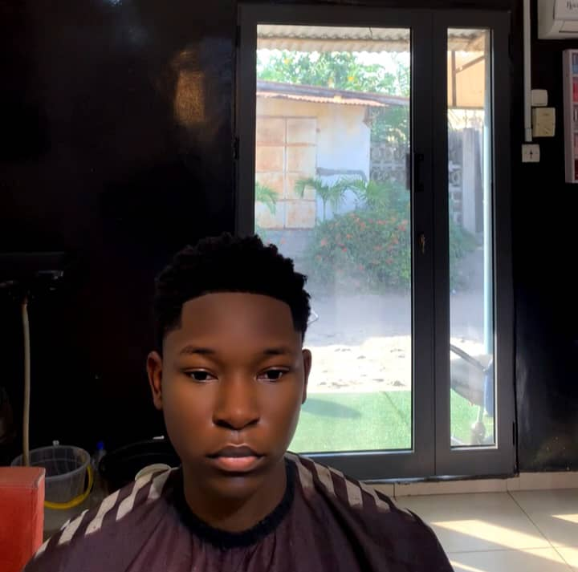
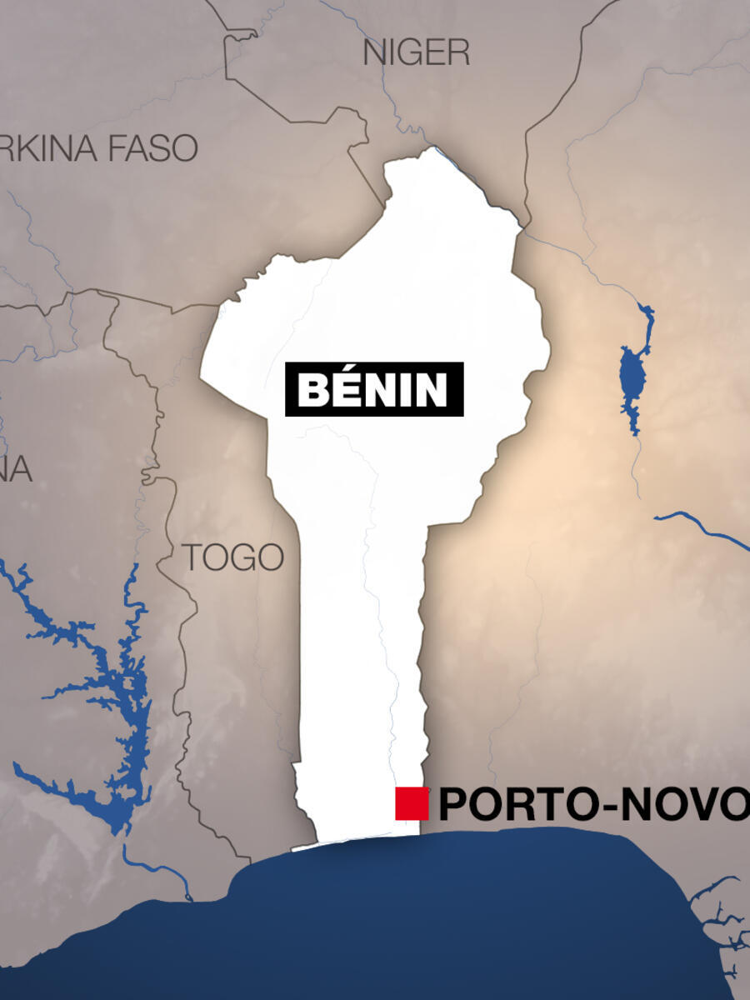

Welcome to my page
Hello! My name is Assan Mahougnon Cluvet Frepel Verneuil, and I am passionate about technology and software development. I am currently studying Software Development at BYU-Idaho while also exploring various fields like Cybersecurity, AI, and Web Development. I love learning new things, working on exciting projects, and helping others through technology.
I'm currently living in Cotonou, in Benin Republic, it's close to Nigeria, the bests foods of the world are here!!!!
Benin is a small West African country known for its rich cultural heritage, vibrant history, and diverse landscapes. It is bordered by Togo to the west, Nigeria to the east, and Burkina Faso and Niger to the north. The country has a strong tradition in music, art, and folklore, with the famous Royal Palaces of Abomey and the historic city of Ouidah being key cultural landmarks. Benin also boasts a mix of tropical beaches, savannahs, and lush forests. As the birthplace of the Vodun religion, Benin holds significant importance in the development of African spirituality and heritage.